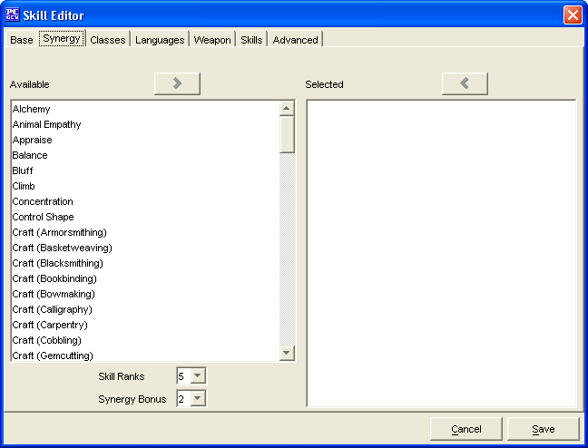

Skill Editor: Synergy Tab

The
Synergy
Tab
is used to
define the synergy bonuses that other skills provide.
The two windows,
Available
and
Selected
are used to create a list of skills that
give a synergy bonus to this Skill.
-
The
Add
and
Remove
buttons
will move the highlighted alignment between the 2 windows, as will
double clicking on an skill.
-
The
Skill Ranks
is the minimum ranks in the
associated skill for the synergy bonus to apply..
-
The
Synergy Bonus
is the bonus received from
the associated skill if the minimum skill ranks are present.
The
Cancel
and
Save
buttons,
which appear on every tab, are used to either cancel the Skill
creation or save it to the customdeities.lst file.